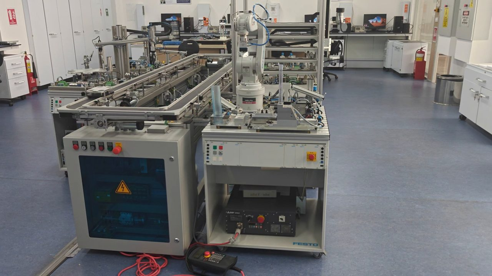
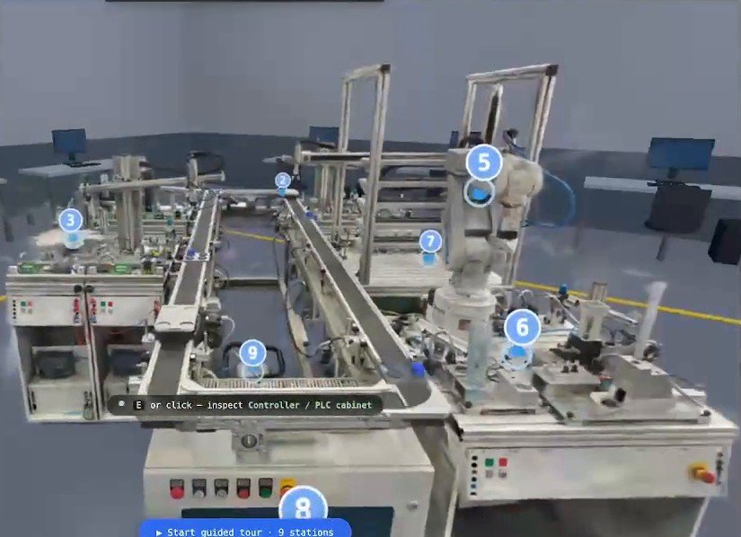
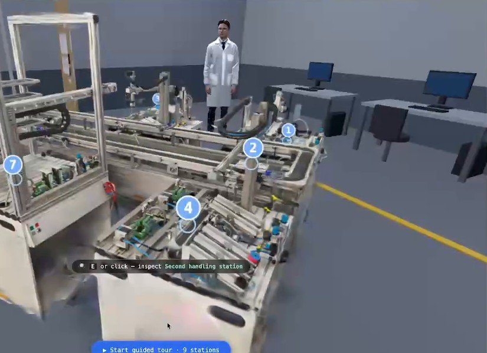

DI-IDEA 2026, Peking University, AI for Teaching and Learning
AI-Enhanced 3D Manufacturing Lab
Silver Award, 2026
A walkable 3D copy of a real engineering lab, made from one phone video, with an AI tutor inside. Students learn at their own pace in a web browser.


The project in 5 minutes
English and Chinese subtitles. The 3D lab linked above is a static copy: the guided tour, the station texts and the recorded voice work, the live AI tutor does not.
The problem
One real production line teaches only a few students at a time, and only inside the lab. Photos and text cannot show how the parts move and connect.
With this method, any teacher can do the same with equipment they already have. One phone video is enough to put a lab online for students who cannot be in the room.
| 1 phone video | 17 minutes of 4K, recorded by hand. No special camera. |
| 93% | of the frames placed in 3D (2,804 of 3,010). |
| ~8 MB | the whole lab, in any browser, with no install. |
| 9 stations | with a guided tour and an AI tutor. |
How we built it
- Phone videoOne person walks around the line with a phone.
- 3D Gaussian splatsCOLMAP places the frames in 3D, then nerfstudio trains the splat model (302K splats in the lab zone).
- Browser and AI tutorthree.js and Spark show the lab in any browser. A server adds the AI tutor and a voice.
What a student can do
- Walk through the lab with the keyboard and mouse, or orbit around it.
- Follow the guided tour through 9 stations: the parts feeder, carriers, handling stations, robot arm, assembly, storage, the PLC cabinet and the air supply.
- Ask the AI tutor about the station in view. The tutor answers in 30 words or fewer.
- Listen: a neural voice reads the answers and station texts, with subtitles word by word.

Does the 3D lab help students understand the line?
User study, 24 to 26 August 2026. 15 students from Bachelor to PhD, 9 majors, age 19 to 39. Each student used two versions, one day apart: a 2D page (10 photos with captions) and the 3D lab with the AI tutor. 7 started with 2D and 8 with 3D. After each version: an 8-question quiz, NASA-TLX workload, SUS usability, and comments.
| Measure | 2D page | 3D lab | What it shows |
|---|---|---|---|
| Quiz score, of 8 | 5.7 | 6.5 | 6 students did better in 3D, 0 did worse (sign test p = 0.03). |
| Spatial questions, of 3 | 1.6 | 2.3 | Layout, size, what is next to what: 8 better, 0 worse (p = 0.008). |
| Time exploring, median | 168 s | 344 s | Students stayed twice as long in 3D. |
| Usability (SUS, 0 to 100) | 64.3 | 60.2 | Both near the usual "acceptable" level. |
Workload (NASA-TLX, 0 to 100, lower is easier). The 3D lab asks more of the student: more moving, more to look at, and some lag on slow computers.
Limits. Small sample (15). The quiz was given only after each version, with no pre-test. The 2D page had no AI tutor, so the result compares "3D with tutor" against "photos with text". Students asked for simpler tutor language, a sharper scene and less lag.
What students said
"I liked 3D gaussian environment, it feels real. Also that I have AI where I can ask details… the function walk, it feels so real."
"The system felt educational without being overly simplified."
"The static photographs made it hard to visualize the movement of components."
"Overall, the core concept of this project is amazing!"
The award and the team
Silver means top 3 of the 10 winners in our group, "AI-Enabled Learning Innovation Cases" (1 Gold, 2 Silver, 3 Bronze, 4 Merit). The prize is a trophy, a certificate and RMB 10,000. The award ceremony was on 8 November 2026 at Peking University, during the Beijing Forum.
Team: Zhanat Makhataeva (lead), Vladimir Albrekht (main developer), Kulan Sagadi, Batyr Arystanbekov, Alar Akilbekov. Institute of Smart Systems and Artificial Intelligence (ISSAI), Nazarbayev University, Astana.
Data: 15 paired participants, Nazarbayev University, August 2026. The inspect view shows "Modern Scientist in a Lab Coat" by restore50 (CC BY).